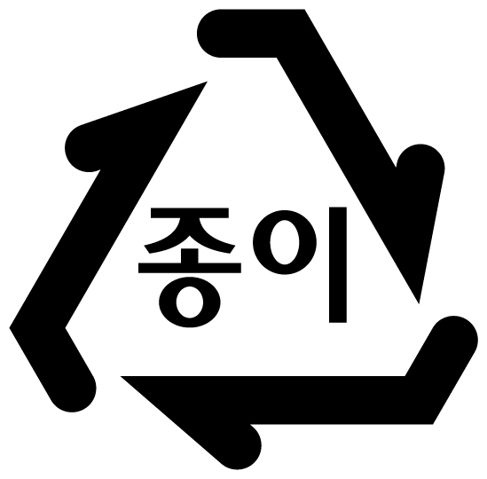
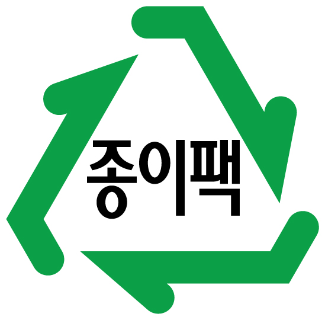
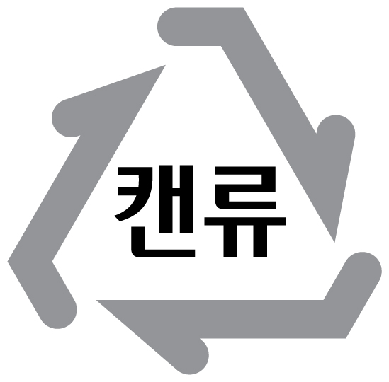
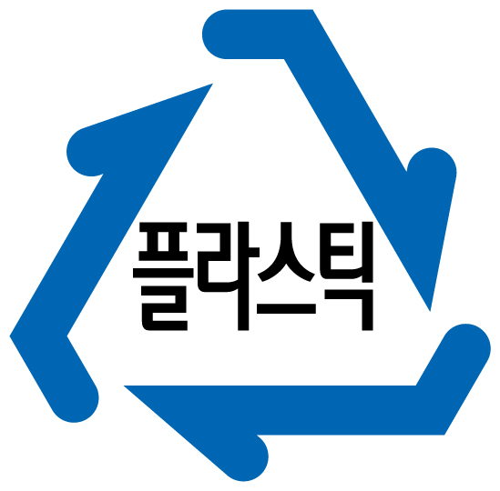
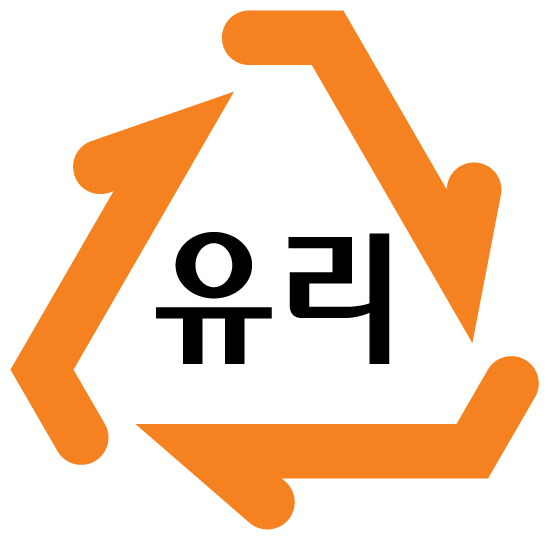

홈으로 돌아가기

이물질은 모두 제거하고 배출한다.
종이, 골판지, 신문은 따로 분리해서 배출한다.
광고지 같이 코팅된 종이는 일반 쓰레기로 배출한다.
스프링, 스테이플러 심 같이 다른 재질은 제거 후 배출한다.

우유팩, 종이컵 등 내용물을 비우고 말려 종이팩 수거함에 따로 배출한다.
종이팩 수거함이 없으면 말렸다가 주민센터에 제출하자.
아이스팩은 찢어서 버리지 말고 주민센터에 주면 받아주는 곳이 있다.
이물질(특히 음식물) 없이 배출한다.
검은색, 청색등 유색 비닐봉지는 분리수거가 불가능하다.
마크에 other이라 써져있으면 분리수거 불가능

내용물을 비우고 배출한다.
담배꽁초 넣지말고 일회용 부탄가스 같은건 송곳으로 구멍 뚫어 배출하자.
other라 적힌건 분리수거 불가능
페트병의 라벨을 제거해서 버리자
병뚜껑과 재질이 다를 경우에는 모두 분리해서 배출한다.

other인건 일반 쓰레기로 버리자
여러가지 재질이 섞인건 종량제 봉투에 넣어 버리자

내부에 이물질을 넣지말고 말린다음 배출하자
맥주병, 소주병은 마트 들고가면 돈으로 바꿔주니 분리수거 말고 마트로 가자.
거울, 깨진 유리, 도자기는 매립용 쓰레기 봉투에 버리자. 대형폐기물 스티커를 붙이던가